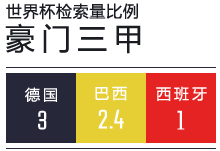
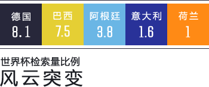

穆勒的帽子戏法让德国队人气瞬间飙升，已经超越了东道主五星巴西！ 而从数据上看，当卫冕冠军西班牙变身“西拔牙”，他的铁杆球迷们并没有放弃对它的
豪门球队之地域偏爱：
巴西队—— “钟意雷~”
巴西队在广东拥有最多的球迷，真别说，巴西巨星内马尔的灵秀气质，真和广州帅哥有几分相似哦~
德国队——“矮卓你~”
德国队众多的粉丝在江苏，北京、上海位列二三，难道真是“经济基础决定进球个数？”
西班牙队——“喜欢嗯，组嗯好运~”
西班牙队的铁杆儿球迷最多分布在湖北，热情豪爽的他们才不会计较首场比赛的失利，他们会一直支持你！


西班牙队——“再见，西班牙！”
小组赛连败两场后，“西拔牙”真的被拔掉了，“西拔牙”球迷很桑心，不过毕竟世界杯才刚刚开始，他们也开始转向支持其他球队！
巴西队—— “支持黎~”
面对墨西哥队“六指门神”奥乔亚，巴西队无计可施，闷平的比赛给巴西的晋级之路增添了悬念，不过广东球迷队大巴西依然充满信心，坚信下场必血洗喀麦隆！
德国队——“想夺冠，球星多不好使！”
德国的球迷支持率依然排名第一，不过星光熠熠的西班牙提前淘汰也给德意志战车敲响了警钟，球星多是木有用滴，整合不到一起照样输！
阿根廷队—— “梅西，看好你哟~”
送走西班牙后，阿根廷支持率瞬间暴增， 看来“西拔牙”的球迷们很多转向了阿根廷，期待“西甲金靴”能够大放异彩，为巴萨的战友们带来一丝安慰！
意大利队—— “怪好的~”
巴神状态神勇，皮尔洛宝刀未老，意大利军团晋级在望，随着卫冕冠军的提前出局，安徽、湖北两地更多球迷开始关注传统强队意大利，他们坚信丰富
荷兰队—— “荷兰队，雄起~ ”
5:1大胜西班牙，荷兰队让世人震惊，赛前不被看好他们充分展示了凶残的进攻能力，随着3:2战胜澳大利亚，荷兰队提前一轮出线，火热的重庆球迷已经开始爱上这只橙衣军团，荷兰队的进攻够够火辣、够劲暴！